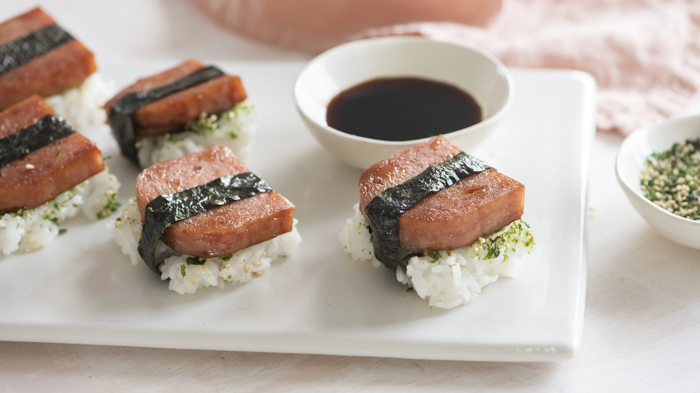

Odin Recipes
Fancy Spam Musubi
Description
"A yummy, yet so simple recipe that's great for a snack or even as an appetizer for a casual party."
Ingredients
- 12 ounces Spam
- 2 cups hot cooked white rice
- 1/4 cup bonito flakes (furikake is better)
- 1/4 cup soy sauce
- 1/4 cup sugar
- 1/4 cup rice wine
- Nori
Steps
Preparation Instructions
- Take the Spam out of the can and slice it into 8 slices. Wash the container and set aside for later use.
- In a skillet, heat the soy sauce, rice wine, and sugar until the mixture bubbles. Turn the heat to low and pan fry the slices of Spam, turning often. Remove and let cool.
- Spread the hot rice about an inch thick. Sprinkle generously with the furikake until most of the surface is covered. Quickly stir the rice so that the furikake is distributed throughout. The warmer the rice, the easier this step is.
- Line the inside of the Spam can with plastic wrap. Using a small spoon, scoop the rice into the container, packing down firmly after each scoop. Let it chill in the refrigerator for 10 minutes.
- Pull the rice out of the container by the plastic wrap, and slice it into 8 slices. This is easier to do if you dip the knife in water.
- Top each slice of rice with a slice of Spam.
- Cut the nori into 1/2 inch strips. Wrap around, making the ends meet at the bottom. Use a little bit of water to make the ends stick together.
- Enjoy!